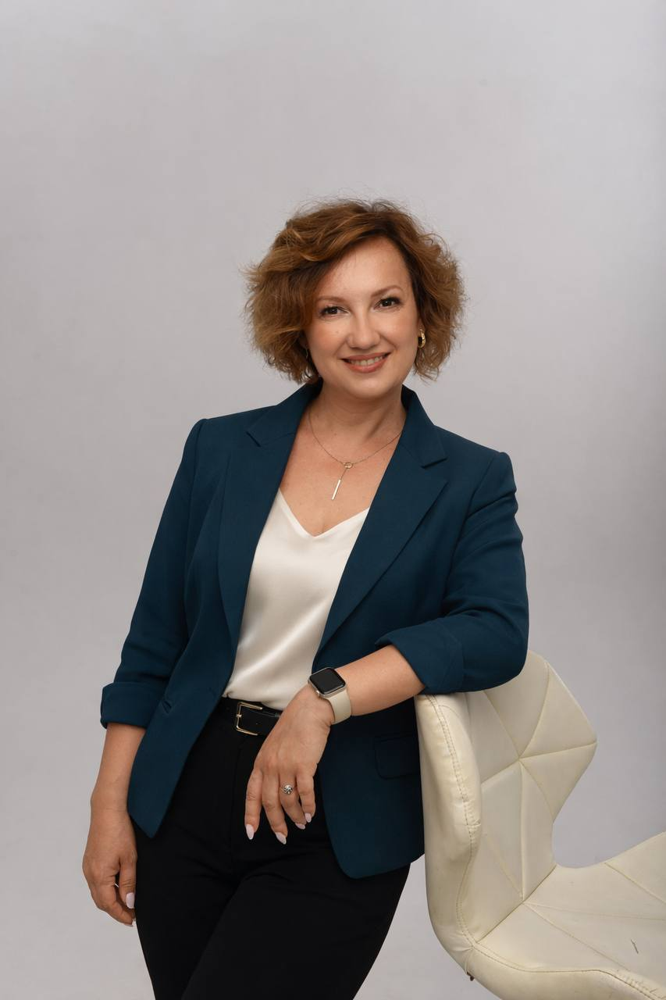

Психологиня · Супервізор
Допомагаю пройти складні періоди, відновити контакт і знайти рішення, які працюють.

Підлітковий вік — це не «важкий період», який треба пережити. Це час, коли ваша дитина вперше знайомиться з собою. І цей шлях вона може пройти разом з вами — якщо є контакт.
Супервізія — це не контроль, а підтримка. Простір, де можна бути чесним із собою, розібрати складний випадок і рости не через вигорання, а попри нього.
Освітні програми, тренінги для молоді, табори та психоемоційна підтримка команд. Розробляю програми під конкретні потреби і завжди адаптую під аудиторію.
Про мене
Я — психолог із фокусом на роботі з підлітками та їхніми сімʼями. Вірю, що підлітковий вік — це час, коли людина вперше знайомиться з собою справжньою.
У роботі з психологами допомагаю побачити те, що важко помітити самостійно — і рости не через вигорання, а попри нього.
Тетяна не просто проводить тренінги — вона створює простір, у якому молодь почувається в безпеці і готова відкрито говорити навіть про складні теми.
Проектний координатор БФ «Посмішка ЮА»
Триденний цикл тренінгів із профілактики емоційного вигорання став для наших учасників справді цінним досвідом. Після завершення багато хто говорив, що забирає із собою не лише нові знання, а й внутрішній ресурс.
Всеукраїнський єврейський БФ "Хесед Ар'є"
Мені завжди дивувало, як Тетяна вміє поєднувати глибоку експертність із простотою подачі. Поруч із нею завжди було відчуття, що все буде зроблено якісно і з турботою про людей.
Директорка Освітньої фундації ГО GoGlobal
Ми прийшли до вас, бо зовсім не розуміли, як допомогти доньці. Вже після перших зустрічей побачили зміни — поменшало конфліктів, ми навчилися краще розуміти її емоції.
мама 9-річної дитини
Вже після першої зустрічі я зрозуміла, що знайшла свого психолога. Найбільша перемога — у нашій сімʼї припинилися щоденні конфлікти. Те, що ще нещодавно здавалося неможливим, стало нашою реальністю.
мама 15-річної дівчини
Діти були у захопленні. Ви так легко і природно знаходите з ними спільну мову. А дихати по долоньці тепер буду і я. 😊
засновниця освітньої студії «Поступ»
Оберіть зручний спосіб — я відповідаю особисто.